un'idea. un'aula. un istituto. eureka! è la lista del liceo archimede di messina.
spazi liberi. per ripassare. per recuperare. per stare. apertura fino alle 17.
un calendario fisso. ogni mese un appuntamento. cinema. ospiti. parole vere.
calcetto. basket. pallavolo. scacchi. classifiche pubbliche. finali in palestra.
ascolto vero. nessun giudizio. un orario chiaro. un posto dove andare.
ogni consiglio. un riassunto chiaro. cosa si è detto. cosa si è deciso.
fine anno. musica. food. la scuola fuori dalla scuola. organizzata da noi.
presentazione della lista. domande aperte. risposte vere.
un film. due ore. una discussione. in aula magna.
calcetto e pallavolo. tutte le classi. una sola palestra.
uno scrittore. un'ora. domande senza copione.
musica. food truck. stand. il cortile come non l'avete mai visto.
cosa abbiamo fatto. cosa non abbiamo fatto. cosa lasciamo.
tre organi. quattordici candidati. classi diverse. sezioni diverse. una sola lista.
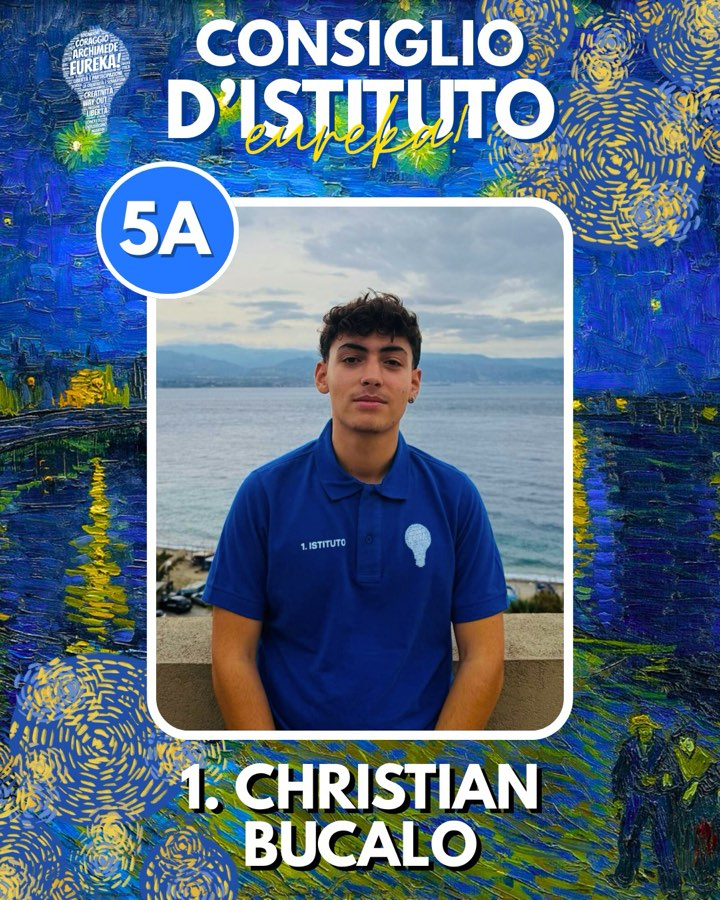
c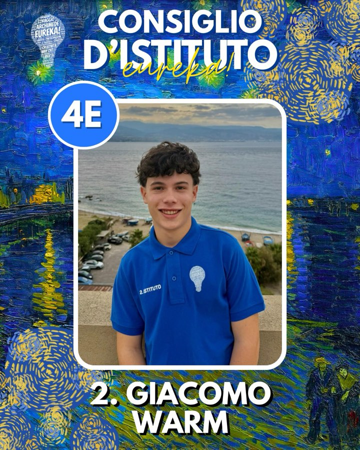
g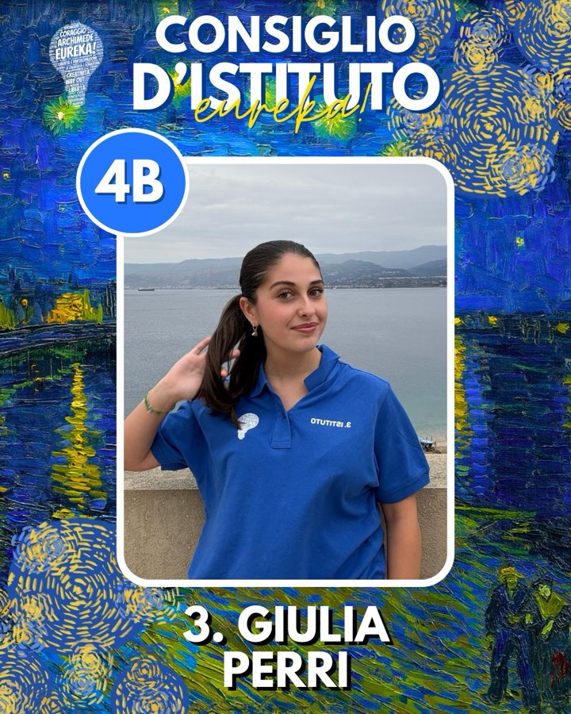
g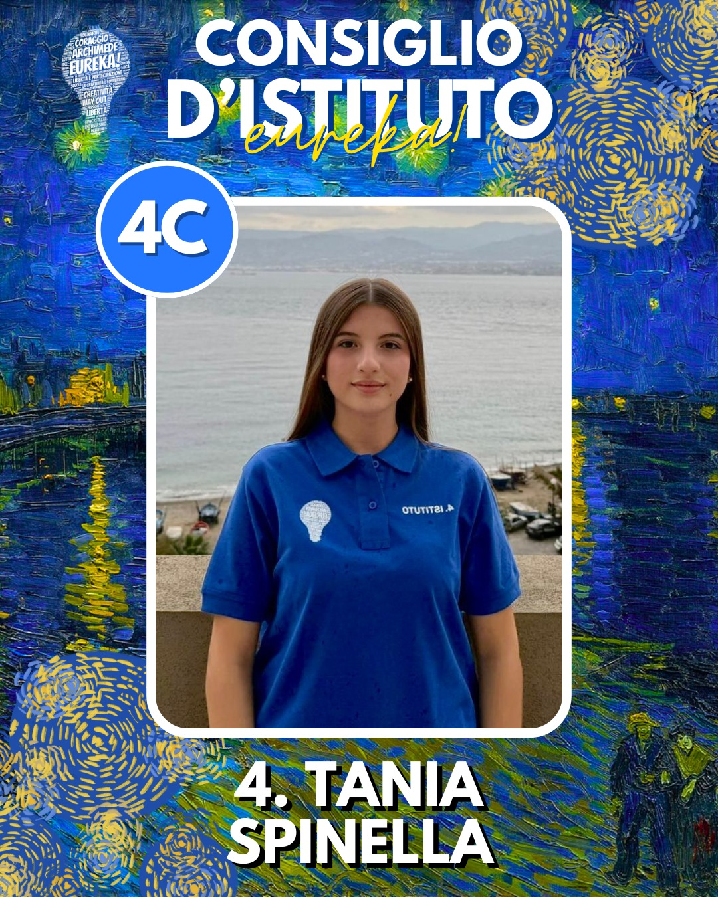
t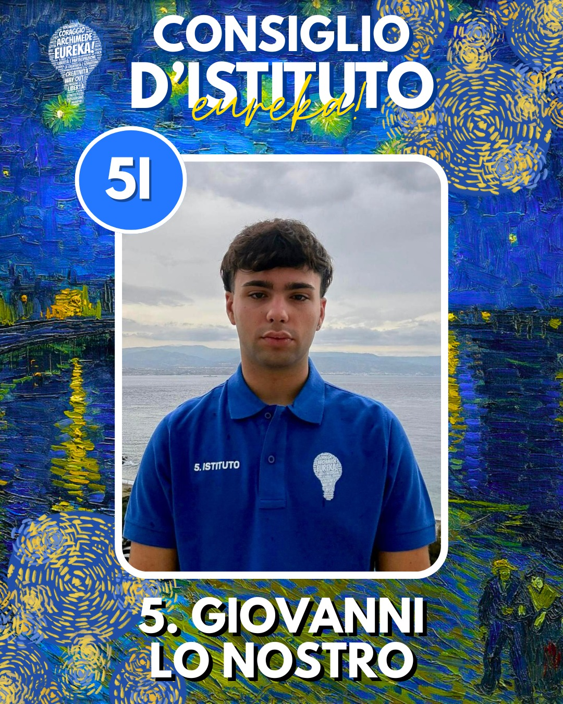
g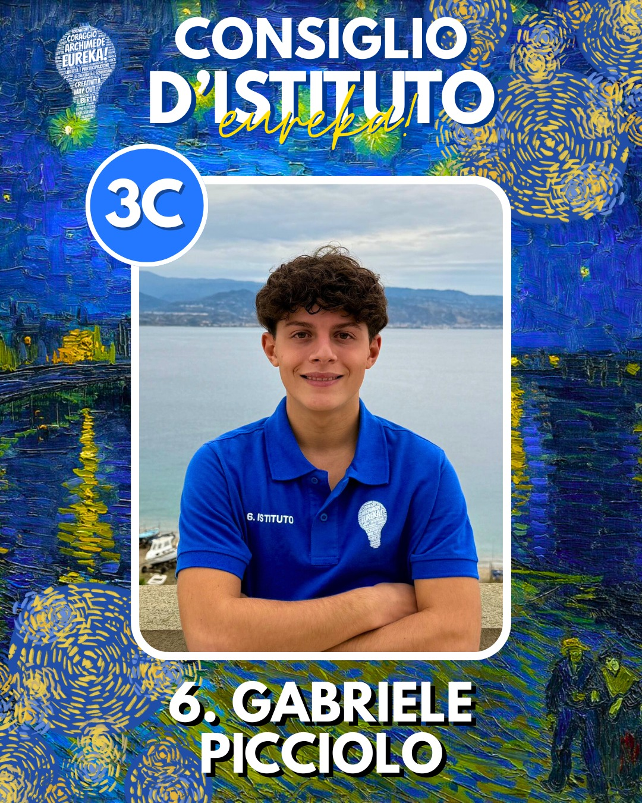
g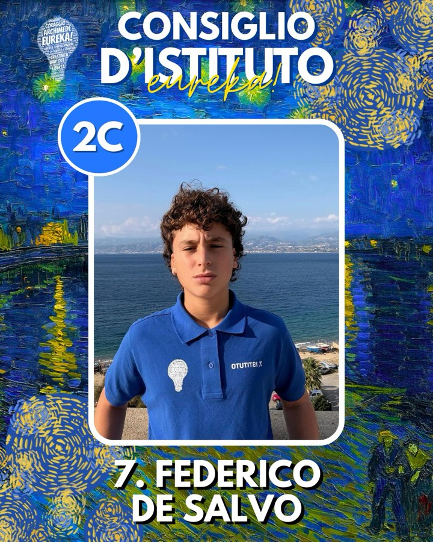
f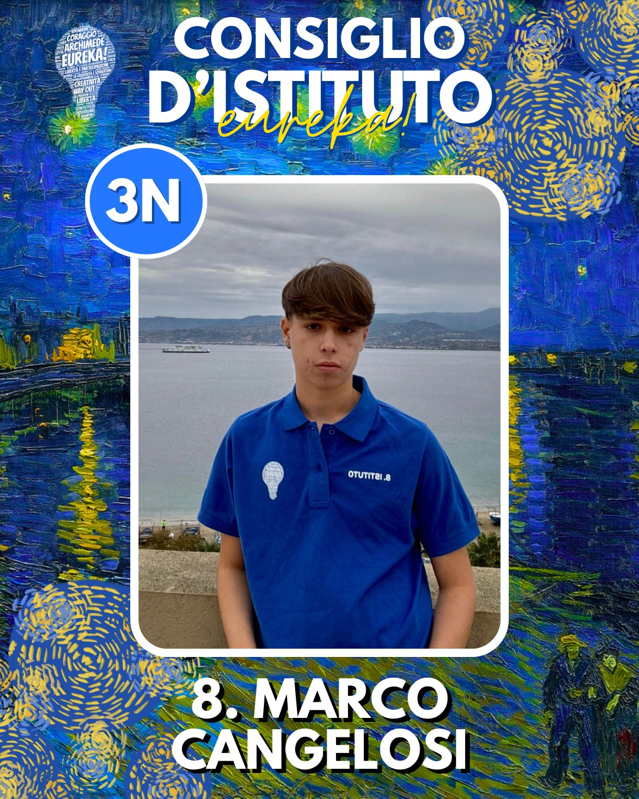
m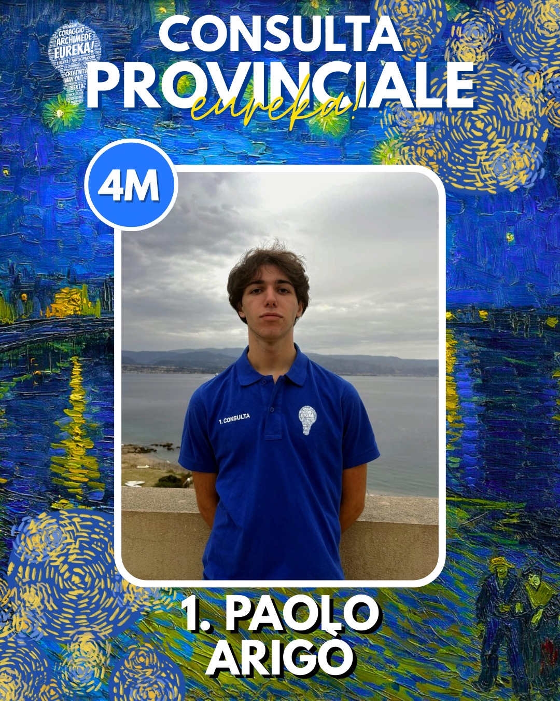
p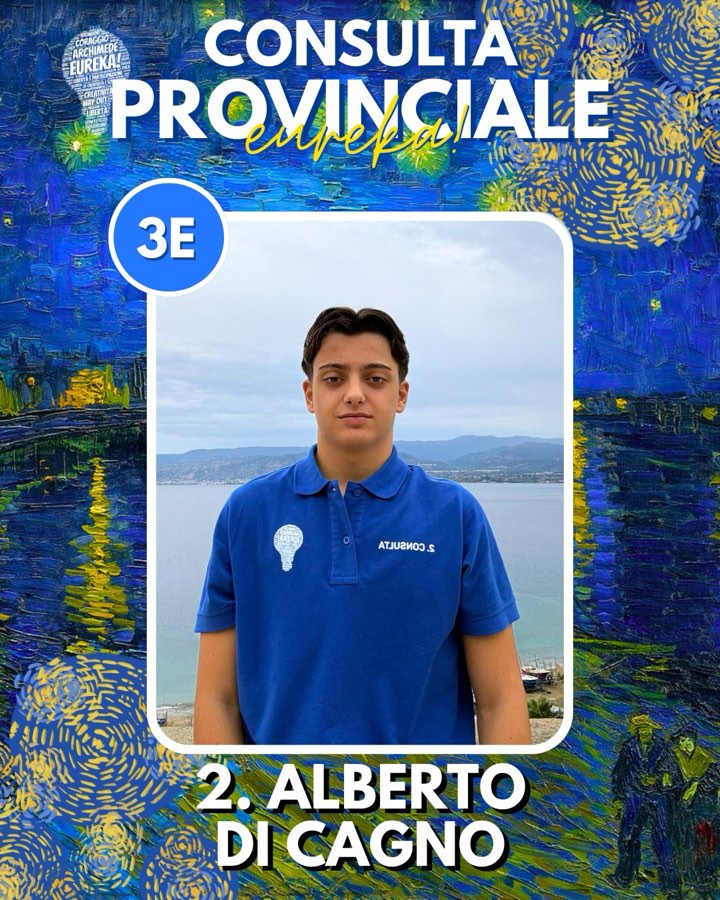
a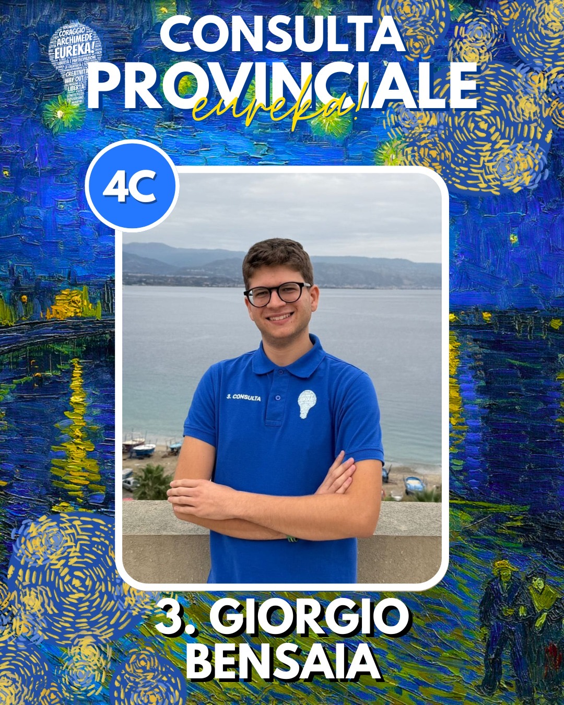
g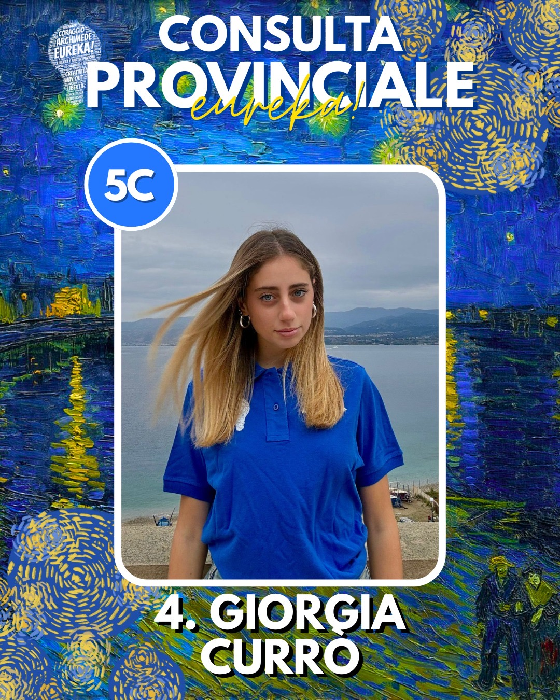
g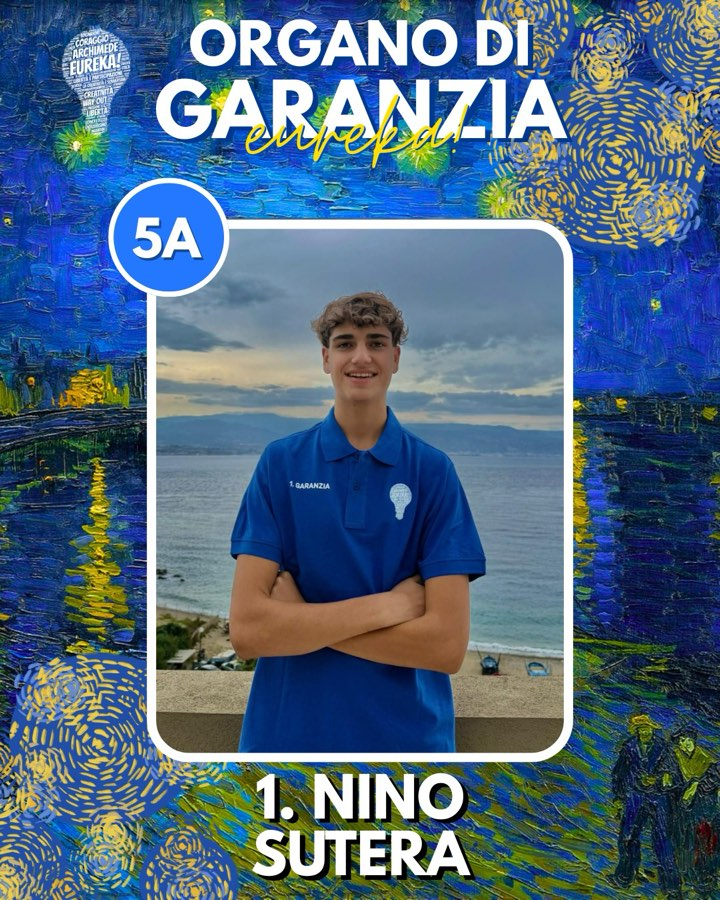
n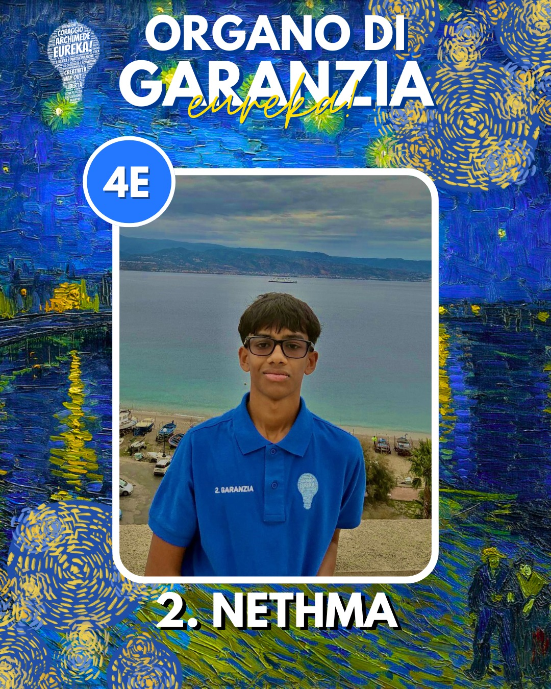
neureka è la parola di archimede. è la parola che si grida quando si trova qualcosa.
la lista nasce nel 2018. dentro un liceo da 1.500 studenti. con un'idea semplice. la rappresentanza si fa. non si recita.
da allora cambiamo. ogni anno. cambiano le facce. cambiano le classi. resta il metodo.
ascoltare. proporre. fare. e poi raccontarlo.
una lista. tre organi. una sola direzione. accendere il liceo archimede, una proposta concreta alla volta.